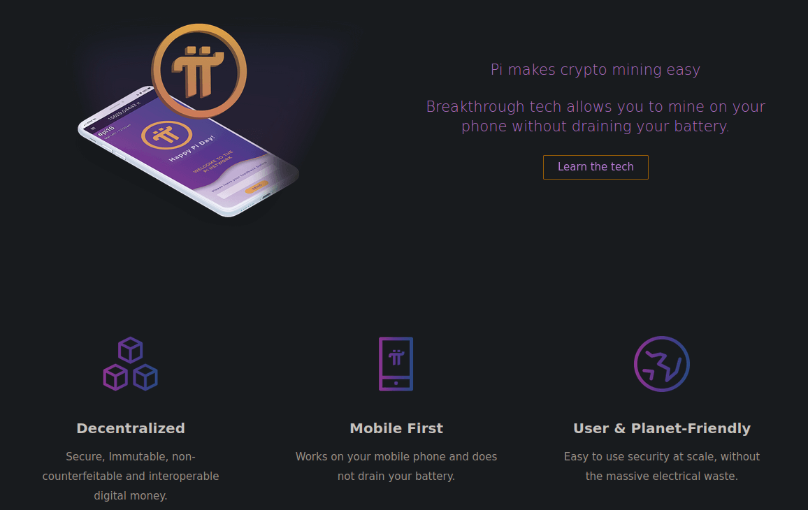

You can see on the image above, the keys of the project. In my opinion, it is a good idea to sensibilize people to the usuability of cryptocurrencies and the fact that pi uses a low energy protocol to secure the transactions is a good thing (if it becomes big of course). As bitcoin did in its early days, the developpers of pi are giving away some tokens for free to encourage the users to use it. You earn a little bit every day and can earn at a higher rate by inviting people to join the network with your invitation code.
The real issue here is that there is no room for privacy and from what I understood, the blockchain will be public just like bitcoin's blockchain.
So why am I writing an article about it ?! Well, for a few reasons :
- The project is still in a developement phase, which means that you can take quite some advantages out of it as it didn't make all the noise it will when it will become usable in real life situations.
- A lot of people (currently more than 17 million) joined the network, which makes it very likely to become vastly used over the world once it is launched. And because you can earn it for free (right now), then you will be able to withdraw at some point, a currency that should have a decent value. So you probably won't become very rich with that (except if you invite enough people to join the network) but from my experience, I think that this might be an actual source of decent passive income.
- The project could maybe, at some point, go towards a more private model like Monero's one and could be usable in a nice way.
Now here is something for the haters or anyone who is sceptic about the project :
Yes, this project might be a scam, although many reasons make it feel and seem very legit (the node, apps being open sourced, the size it took, the fact that we know the identity of the devs etc...). And even if this is a very big scam, what do you have to lose ? 10 seconds a day ?Some might say that the app could be a virus blablabla. Well, first it passed the security checks of both the apple's app store and google's play store, and second, you can always run the app in an other user profile on android, which isolates it from the rest of your apps and data, it's a bit like if you had a phone dedicated just for the pi app.
Something else I heard is that they are collecting people's data and could possibly resell it. That could be the case if you register with a phone number, but you can also register with a facebook account, which will not give them access to a lot of stuff. Given what's written above, I encourage you to have a closer look at the project and join the network if you think that spending 10s a day on something that could be profitable is smart.
You will need an invitation code to create an account, you can use mine if you want to support my work : macedoinegontran Don't hesitate to share that article around you and talk about the project to your friends, family etc... The bigger the network is, the stronger it becomes and the more chances it has to get widly adopted by shops and services providers.